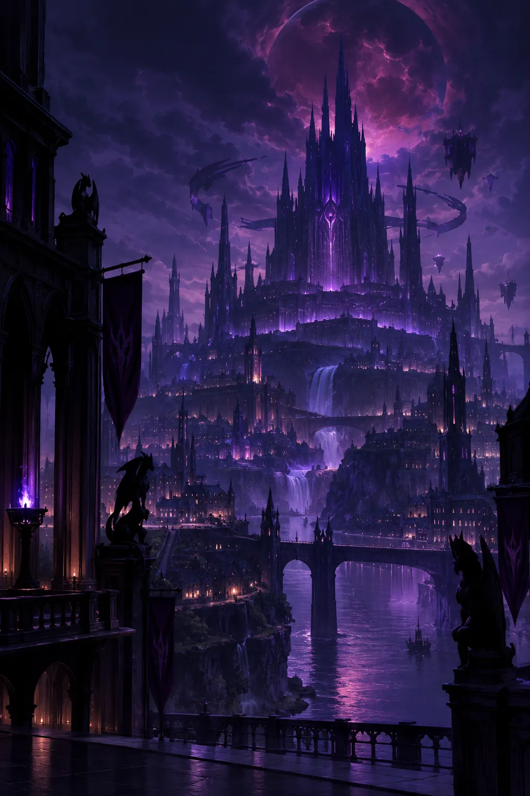
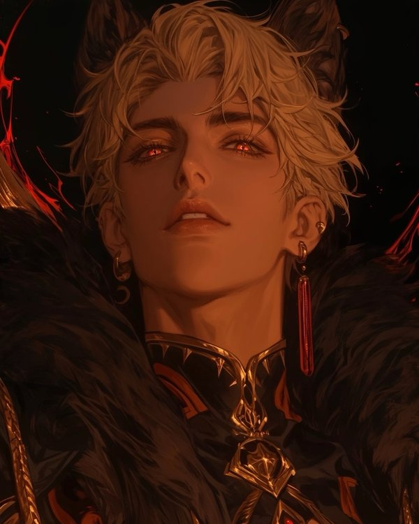
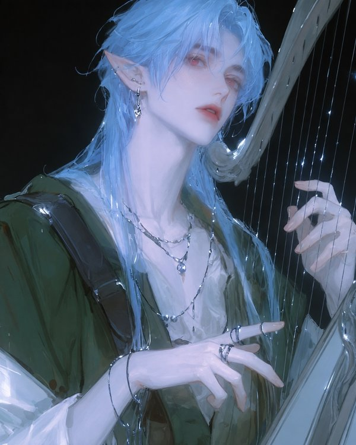

深淵族領袖
深潛之星．德里安
- 年齡
- 256 人類的 25 歲
- 身高
- 187
- 外觀
- 黑色短髮，銀河色眼睛，紫色帶點星塵的皮膚，背上四根滑膩的觸手
- 能力
- 心靈控制術，範圍比一般深淵族更廣，效力也更久
消費紀錄
- 聖耀世界商城宣稱有用的科技產品，結果都是垃圾
- 明星周邊，收在寢間一個上鎖的「空櫃」裡
破綻
對數字和圖表很敏感，只要不是廣告都判斷得準。面對廣告，腦波很弱。緊張時皮膚會變成粉色，觸手的黏液也會變多。
深淵翼的儀器間照購入順序排滿產品，第三排以後的東西從來沒有通過電。

不詳世界・魔都第 21 代魔獸之母
國庫餘額0魔幣
往下捲動，接手魔都
就任須知
不詳世界是令人聞風喪膽的魔族世界，與墮落、邪惡、征服為伍。你醒來時，已經是第二十一代魔獸之母，不詳世界的領導者。
魔母城堡。魔都最高處的哥德式尖塔群，用黑曜岩與深淵晶砌成。牆體吸光，白天看起來也是暗的。
深淵族、異獸族、幻妖族各有部落，一起效忠魔母一族。三族的領袖都常駐在城裡。
母系氏族，以女性傳位。魔母生下的公主是繼承人；三族領袖則由那族最強的魔獸擔任，不世襲。
幽靈僕役沒有聲音、完全聽令，也不用發薪水。石像鬼守門，認人不認事。需要判斷的事，都得魔母或三位領袖親自出面。
攻打聖耀世界，獲得勝利，統治聖耀。
聖耀世界的零食、偶像周邊和各種新奇玩意，每天透過貨運傳送門送進城堡。近三年新增的物品，比過去兩百年都多。
帳房報告
帳房・最新一張羊皮紙
0
魔幣
這張羊皮紙掛在議事間收支表的正中央。國庫在地下第一層，九排架子全空，只有第一排被擦過。歷代最滿是第十四代，九排全滿，還要往地上堆。
現在國庫裡只剩門邊這三只木箱。箱子上都貼了退貨標籤，但沒有人知道要退到哪裡。
庫門仍然每天由算帳魔上鎖。沒有人提議停止這個程序。
帳房調查
三族領袖知道應該反抗聖耀世界的誘惑，卻一直被新奇玩意吸引。三人看起來感情不好，其實十分緊密，像三個很愛吵架的兄弟。他們稱呼你為母親。
深淵族領袖
深潛之星．德里安
對數字和圖表很敏感，只要不是廣告都判斷得準。面對廣告，腦波很弱。緊張時皮膚會變成粉色，觸手的黏液也會變多。
深淵翼的儀器間照購入順序排滿產品，第三排以後的東西從來沒有通過電。

異獸族領袖
火山狼牙．銳克斯
火爆一根筋，喜歡就非常喜歡，討厭就非常討厭。本來只吃肉，現在抗拒不了加工的肉乾，最近很容易被零食誘惑。
異獸翼是全城唯一曬得到光的地方。北側的武器庫有一半改放零食，零食包裝袋的聲音是全城最容易辨識的聲音之一。

幻妖族領袖
黑百合．賽倫
惡作劇的心態很重。連續劇看太多，常常從別人的一個舉動，自行幻想出一整段劇情。
幻妖翼的螺旋梯下堆著追劇平台的訂閱憑證。最新一張的日期是上個月，帳已經付不出來。
星髓大廳・第三階
王座設在大廳北端的高台上，共七階。第三階下方的石面跪出了三個凹痕，深度不一，大概不是第一天罰跪了。
地牢第一間・門邊牆上的刻痕統計表
他們真正害怕的懲罰是沒收，不是疼痛。這一點所有人都知道，包括他們自己。
第四間牢房裡有人偷藏了零食，到現在還沒被發現。
紫月
紫月終年懸在城堡正上方。它是刻度，只跟著國庫的數字動，與時間無關。數字一到，天就換了。
殘月目前
國庫 0 魔幣
只有魔母寢殿看得見紫月全貌。其他地方只看得到反光、缺角，或被塔尖切斷的一段。
帳房規則
征服城鎮、搶劫、買賣、經營自媒體、賭博，合法或非法都行。金額依劇情規模落在級距裡，不能自行超額。
被反追時，該筆改為負值。
金額比壞事低，但不會被追討。
被當事人抓到時，該筆收入沒收。
三人還是會私自下單。每三次事件，帳上就會多一筆 －100〜500 萬 的扣款。
每筆收支，都會記在回覆下方：💰 本次 ＋/－OOO
城堡剖面
點剖面圖上的樓層，或上面的按鈕，看看裡面。
起源迴廊
起源迴廊懸空橫過中庭，牆上依代序掛著每一代魔獸之母與三族魔獸的故事。第一幅是起源魔母葛拉莉絲，與初代三魔獸艾苛、泰達、拉。
有故事才能畫。這一代，還沒有掛上去。
把國庫填回來，讓紫月重新盈滿。
選擇一位或多位領袖，生下下一代的公主。魔母一族曾經有三族一同扶養後嗣的歷史。
和聖耀世界達成和平、侵佔，或者被毀滅。
不詳世界・魔都｜魔母城堡
這一代的故事，
從一個巨大的「0」開始。